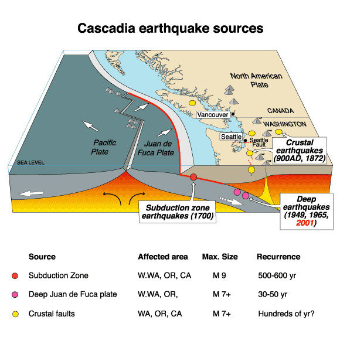
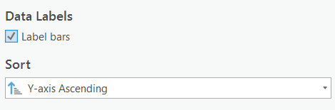

Port Alberin Tsunami Risk Assessment
Please note: The Lab Questions corresponds to this lab assignment. There are questions you need to answer in the quiz that pertain to the lab, so its a good idea to skim the quiz questions before starting the lab.
This page contains instructions for the lab assignment, follow them to work through the lab in ArcGIS Pro. There are links to documentation where applicable along with embedded screenshots and videos in the instructions at some steps for reference. Feel free to work with peers in your lab section and don’t hesitate to ask your TA for help!
Warning: The ArcGIS Pro software package is updated frequently. The exact name/position of tools may diverge slightly from what you see in the screenshots or videos. Don’t worry recreating what you see in the videos exactly - just use them as a guide to help you work through things.
Framing the Problem
In this lab, you will work through a full GIS workflow and get an introduction into automated processing using a tool called Model Builder. We will be conducting a tsunami risk assessment for Port Alberni BC to determine if how the city’s infrastructure and residents might be impacted.
The Cascadia Subduction Zone
Just off of the West Coast of Vancouver Island, is the Cascadia Subduction Zone (CSZ). Until recently, the common scientific theory was that the CSZ was incapable of producing megathrust earthquakes and their associated Tsunami’s because “no sizable earthquake has occurred on it since European settlement began” (Ludwin et al. 2005).

Traditional Knowledge and Records of Past Tsunamis
Despite the scientific communities’ assumptions that the CSZ was not a threat, knowledge of the destructive potential of the CSZ was preserved in the oral histories of coastal indigenous peoples from British Columbia to Northern California. There are numerous histories describing a massive earthquake and tsunami that occurred sometime around 1700. These histories were transcribed between 1860 and 1964. Read the highlighted sections of Ludwin et al. (2005), which can be found here
It wasn’t until the 1990’s that scientific research began to shown that the CSZ was capable of producing megathrust earthquakes and tsunamis. Tree ring studies and historical accounts of a Tsunami in Japan pinpoint the timing of the last major CSZ earthquake at 21:00 Pacific time on January 26, 1700.
In fact, there have been at least seven megathrust earthquakes exceeding 8.0 magnitude in the last 3500 years. The recurrence interval for massive earthquakes along this fault line are estimated to be between 243 and 500 years.
In 2010, geologists predicted a 37% chance of a magnitude 8.2+ event within 50 years, and a 10 to 15% chance that the entire Cascadia subduction zone will rupture with a magnitude 9+ event within the same time frame.
This example highlights both the arrogance of the scientific community and the lack of value it has historically attributed to traditional knowledge.
Unique Geography
On March 28th, 1964 a megathrust earthquake (9.2 magnitude on the Richter scale) occurred in southern Alaska. Known as the “Good Friday” earthquake, it was responsible for 131 deaths: 9 from the earthquake itself, and 122 from the subsequent Tsunami, reaching as far away as Crescent City, California. In British Columbia, the Tsunami’s impacts were most devastating in Port Alberni, where 55 homes were washed away and 375 more were damaged. Port Alberni is especially vulnerable to Tsunamis because of its specific geography. Located at the head of 40km long fjord, Tsunami waves are amplified as they are funneled up the fjord. Read the highlighted portions of the introduction section in Fine et al (2008) which can be found here . You can also watch the simulation shown below for a visualization of what is going on.
Simulated Wave Heights
Research Question
In light of this research, the city of Port Alberni submitted an application for funding to update their Tsunami warning and response infrastructure. The city was recently granted funding and has hired you as a GIS consultant to assess the potential impacts of an 8.5 magnitude earthquake occurring directly off the west coast of Vancouver Island that would produce an estimated wave height of 10 meters.
How would a catastrophic tsunami potentially impact Port Alberni? The city wants to know:
Which roads are at risk of flooding or damage?
Which properties in the city are at risk?
How many people in Port Alberni are potentially living in areas at risk?
Are the Tsunami Shelters sufficient?
Workflow
Identify at risk areas based on elevation and distance from coast.
Overlay vector layers to highlight features at risk.
Visualize and analyze the results.
Download the Project
I’ve gotten the ball rolling for you and setup a project, which you can download here. This project folder contains:
PA_Risk_Assessment.gdb
- PA_Risk_Assessment_Inputs: A feature dataset where you will put all the vector inputs for the project. It already contains one layer.
- Waterbodies: A polygon representing the coastline.
- PA_DEM_ProjectRaster: A Digital Elevation Model (DEM) is a type of raster data used to represent elevation. This one covers the the Port Alberni area. Raster data cannot be stored in feature datasets, they are only for vector data.
- PA_Risk_Assessment_Inputs: A feature dataset where you will put all the vector inputs for the project. It already contains one layer.
PA_Risk_Assessment.tbx: Toolboxes can contain custom models and scripts.
InundationZone: A model that you can use identify areas at risk for Tsunami inundation. You will use this model to identify possible areas in the city that will flood.
You will also create a new model to incorporate data from the City of Port Alberni, the Province of British Columbia, and Statistics Canada. This model will overlay datasets to identify which areas are at risk of flooding.
Port Alberni Data
Download the PA_Data.zip folder and extract it to your PA_Risk_Assessment folder. This folder contains:
- Properties.shp (properties in the city by zoning type) which you should import into the PA_Risk_Assessment_Inputs feature dataset.
- Two text files:
- ZoningCodes is metadata for Properties.shp. We don’t need to worry about it for now.
- Shelters.csv is a text file with the Lat/Lon coordinates of the tsunami shelters. See the video below for instructions on how to import point data from text files so you can import the Shelters layer into the PA_Risk_Assessment_Inputs feature dataset.
Note In the videos, the project is refereed to as Module5, but I’ve changed it to PA_Risk_Assessment. Everything else is still the same.
Downloading Census Data
We want to to download Dissemination Area level population data for the Port Alberni using Simply Analytics. The video below can help guide you through the download process. We are going to download two population variables:
- Total Population
- Total Households
Import the Census Data
Once you have downloaded the data, extract it to your PA_Risk_Assessment folder.
Import the Simply Analytics shapefile into the PA_Risk_Assessment_Inputs feature dataset. Name it Population_Data
Make sure to set the field names following the same procedure as in Module3, reference the variables_names.txt.
- Note: It appears there is a bug in ArcPro, that sometimes causes issues renaming variables while importing Feature Classes. Open the attribute table of Population_Data once you’ve imported it and check that the Population and Household names transferred. If you see VALUE0 and VALUE1 instead, you can manually set names by right clicking on the column you want to rename >> click Field >> Edit the Aliases in the dialog that opens, then save the edits. You can ask your TA for help if you get stuck here.
Downloading Roads Data from DataBC
To conduct the analysis, we also need a roads layer. This data set is available for download from DataBC. DataBC is a useful website for downloading a number of dataset from across the province. Follow the video instructions to download the roads layers. Make sure you download the layer Digital Road Atlas (DRA) - Demographic Partially-Attributed Roads
- You will be emailed a link to download the data. Extract the file to your PA_RiskAssessment project folder then import the data into your PA_RiskAssessment_Inputs feature dataset. Name it PA_Roads.
Automating with Model Builder
We are going to use a tool called Model Builder to organize and save all of our analysis steps in one place. When we use model builder, if any of our inputs or parameters change, a model can be easily adjusted and rerun at any time. It also allows us to visualize our analysis process. This is useful both for editing our own work and sharing it with others.
- For a more detailed explanation of Model Builder, check out this link.
Identify the Inundation Zone
Our criteria for land areas at risk for flooding are: * Land at or below 10 m elevation and within 1km of the coastline.
I have created a model to do this part for you. In order to identify the land areas in Port Alberni at risk for inundation, the model is set up to do four tasks:
Reclassify the PA_DEM to identify all the areas under 10m elevation. See this link for info on the Reclassify tool.
Convert the reclassified DEM to a polygon. See this link for info on the Raster to Polygon Tool.
Buffer the waterbodies by 1km. See this link for info on the buffer tool.
Clip the coastline buffer with the inundation zone. See this link for an explanation of the Clip tool.
Watch the video below to see how I set the model up with an explanation of what it is doing.
Using the Model Yourself
1*. Right click the InundationZone model and click “Edit”. The model will open in a new window, next to your map. The elevation threshold in the relassify is set to 5m, but we want to set it to 10 for our analysis.
2. Change the break values in the Reclassify to from 5 to 10 and run the model. Right click on Reclassify in the InundationZone and select Open * Change the break value to 10
Create Your Own Model
We have four questions we want to address:
Which roads are at risk of flooding or damage?
Which properties in the city are at risk?
How many people within Port Alberni and the surrounding area are potentially living in areas at risk?
Are the Tsunami Shelters sufficient?
Clip the Roads Layer
To answer question our first research question, all we need to do is clip the roads by the inundation zone. Follow the video below to create a new model and clip the roads layer.
A. Use the PA_Roads as the Input Feature
B. Use the InundationZone as the Clip Feature
C. Name the output PA_Roads_Flood.
D. Once you have the output, Open the attribute, of PA_Roads_Flood, click right Click Shape_Length >> Statistics. Take note of the total length of roads vulnerable to flooding (be mindful of the units). This is the answer to a quiz question!
Select Properties by Location
To answer the second research question we can use select by location. See the video below for an explanation of the select by location and instructions on how to apply it in your model.
A. Use the Properties as the Input Feature
B. Use the InundationZone as the Selecting Feature
C. Selections are temporary, you have to use the copy features tool to make the selection permanent. Name the output of the copy Properties_at_Risk. Hint If you check label bars, and sort by the y-axis, it can make your chart easier to interpret.

Select Properties by ZoneName and Intersect Population Data
To answer the third research question, the process is a bit more complicated. If we simply clip the DAs by the Inundation Zone, we’ll end up with a significant overestimate. Its best to overestimate when doing hazards analysis if you can’t avoid it, but we need our results to be realistic. We will use three steps to estimate the maximum number of people who may be displaced.
A. Select just residential and multi-family residential properties.
- Select by Attribute where:
- “ZoneCode is equal to Multi-Family Residential OR ZoneCode is equal to Multi-Family Residential”
- Copy the features to save the selection as Residential_at_Risk. Hint The number of rows in Residential_at_Risk should match your calculations of the number of residential properties you got from the bar chart you created in the last step.
B. Intersect Population_Data with the Selection.
- Input order with the intersect does not matter, because its the combined overlap of both layers.
C. Dissolve the Intersection.
- Set Dissolve Field to spatial_id
- Choose the Statistics Fields, this will give us statistics for the aggregation.
- Population - First
- Households - First
- ZoneName - Count
- Set the output name to Population_at_Risk
D. Add and Calculate a Field to approximate the number of people in the inundation zone. The way we are going to do this is calculate the average # of people per household in each DA, times the number of properties at risk (assumed one household = one property).
- Add a field Pop_at_Risk
- Calculate the field
- !COUNT_ZoneName!*!FIRST_Population!/!FIRST_Households!
- The above equation takes then number of properties (!COUNT_ZoneName!)
- Multiples it by the average household size (!FIRST_Population!/!FIRST_Households!)
- This is just a rough estimate, obviously its flawed, and you’d want a more accurate approach if you were doing this in real life, but this is just for illustrative purposes, so its OK.
Select Shelters by Location
To answer the fourth research question, we can use select by location again. A shelter is only viable if its more than 150 meters away from the inundation zone. Follow the video below to get setup.
A. Select Shelters by location
- Set Input Feature to Shelter
- Set Relationship to “Within a distance”
- Set Selecting Feature to InundatonZone
- Set Search Distance to 150 meters
- Check Invert Spatial Relationship
B. Copy the Feature
- Name the output Shelters_Accepted
New Wave Estimates
Just as you’re getting ready to make your maps, and write your report, a colleague tells you about a new modeling study that was just published suggests that peak wave height could be up to 15 meters and the wave could reach 1250m inland rather than 1000m. Update your raster reclassification values and the waterbodies buffer distance to reflect this new information and rerun your model to update your analysis! You can use the video below as a guide.
Final Deliverables
Export Your Model
In your model window, hit Auto Layout one more time. Then click export and save your model as PA_RiskAssesment_Model.pdf. Note Make sure you save your output as a .pdf, not a .svg file! You will upload this to canvas.

Supporting Figures
Create a bar chart showing the total count of properties at risk by ZoneName. Style it so that it is color-coded by zone type and has the counts labelled on each column. * Save it as Properties_at_Risk_Chart.png and export it so you can upload it to canvas.
Map the Assessment
Create a map showing : * The inundation zone * Roads at risk of flooding * Use symbology to emphasize the arterial roads * Properties at risk * Distinguish between residential and non-residential * Approved shelter locations. * Show the shelter locations with graduated symbols.
The video below gives you some tips. Note Make sure to take into consideration the Data Visualization tips presented in Module 3 when creating your maps. Name your map PA_RiskAssessment_Final_Map.pdf and upload it to canvas.
Report on Your Results
In an old version of this lab - you had to write up a report - I’ve decided to be nice and not make y’all do that :D But think about what you found - we’ll circle back to in in the next lab assignment. Did we adequately answer the research questions?
Which roads are at risk of flooding or damage?
Which properties in the city are at risk?
How many people in Port Alberni are potentially living in areas at risk?
Are the Tsunami Shelters sufficient?